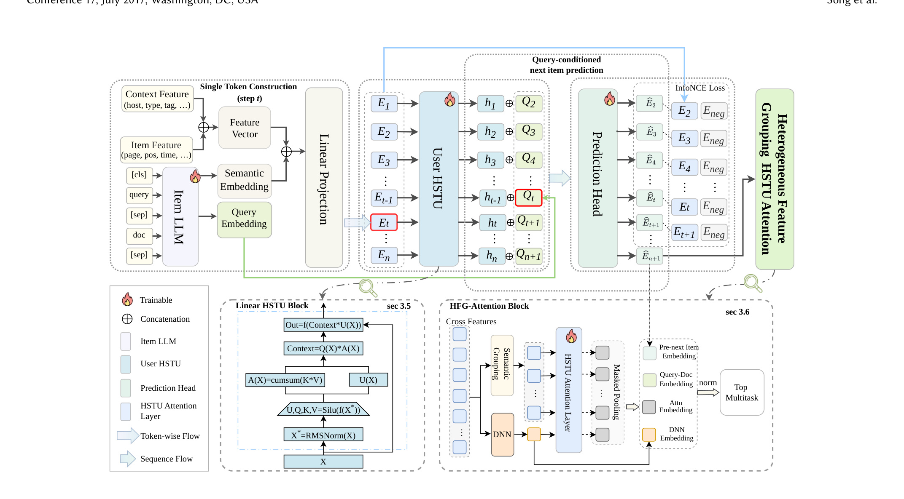
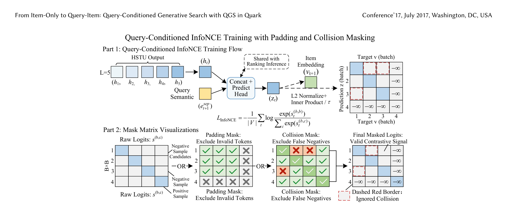
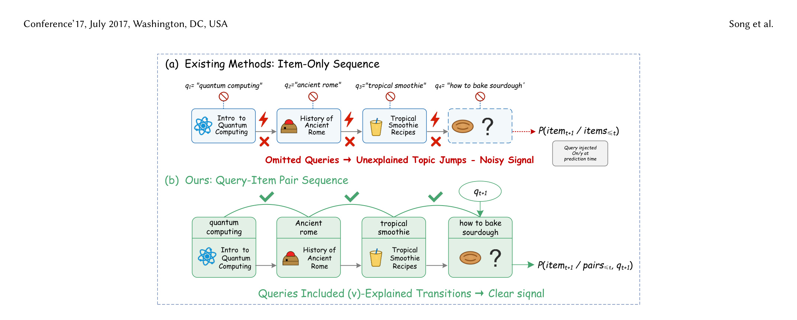
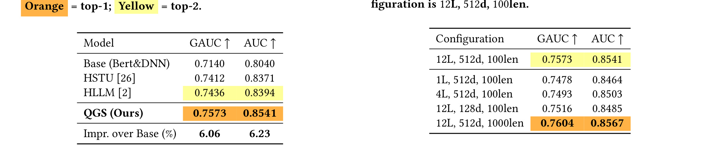
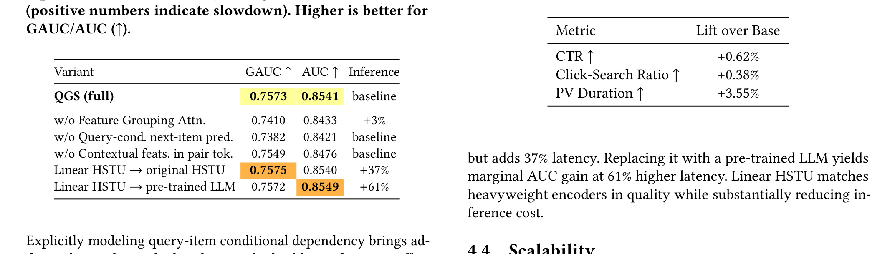

论文入口：arXiv:2605.25514。作者：Yanglong Song, Zihao Yang, Shuo Meng, Rujun Guo, Jin Zhang, Bin Wang, Shaoyu Liu, Xiaozhao Wang, Guanjun Jiang。机构口径：Alibaba Group and University of Science and Technology of China。主类别：推荐算法；来源：arXiv cs.IR；公开日期：2026-05-25。代码/项目页状态：arXiv 页面未核验到独立代码仓库。
1. 背景和问题
这篇论文要解决的问题可以概括为：生成式推荐把用户历史写成 item 序列后预测下一个 item，但搜索排序天然由 query 驱动。若把不同 query 下的点击历史压平成 item-only 序列，模型会把主题跳转误当成连续兴趣，监督变噪。 它值得进入今天的调研，不是因为题目里出现了大模型或推荐系统关键词，而是因为它把一个真实链路里的状态变量单独拎出来验证。对于推荐、搜索或 agent 系统，真正难的是让模型在长时间、多目标、多来源证据之间保持可控，而不是在一个静态 benchmark 上得到更高分。
背景补充 第1个观察点落在《QGS：从 item-only 到 query-item 的查询条件生成式搜索排序》的具体链路上。生成式推荐把用户历史写成 item 序列后预测下一个 item，但搜索排序天然由 query 驱动。若把不同 query 下的点击历史压平成 item-only 序列，模型会把主题跳转误当成连续兴趣，监督变噪。 这里不能只看模型分数，还要看输入状态、候选边界、训练信号和服务约束如何共同改变任务。这一段用于说明为什么它不是旧问题的简单改名，而是把论文里的关键约束放回真实系统。 对工程复现而言，最重要的是把作者声称的改进拆成可记录的日志字段、可回放的样本切分、可比较的基线和可解释的失败样例；否则即使论文给出显著提升，也难以判断收益来自方法本身、数据构造还是评估协议。
从系统视角看，QGS：从 item-only 到 query-item 的查询条件生成式搜索排序 处理的是“上下文怎么被组织成可学习信号”的问题。QGS 把每次搜索交互编码成 query-item pair token，训练 query-conditioned next-item objective，并引入 HFG-Attention 融合异构稀疏上下文特征，在 Quark Search 上做离线和在线验证。 这意味着论文的贡献需要同时从数据、目标、架构和评估四个层面理解。只读摘要会得到一个过于平滑的故事，但 PDF 里的图表显示作者更关心具体工程约束。
背景补充 第2个观察点落在《QGS：从 item-only 到 query-item 的查询条件生成式搜索排序》的具体链路上。生成式推荐把用户历史写成 item 序列后预测下一个 item，但搜索排序天然由 query 驱动。若把不同 query 下的点击历史压平成 item-only 序列，模型会把主题跳转误当成连续兴趣，监督变噪。 这里不能只看模型分数，还要看输入状态、候选边界、训练信号和服务约束如何共同改变任务。这一段用于说明为什么它不是旧问题的简单改名，而是把论文里的关键约束放回真实系统。 对工程复现而言，最重要的是把作者声称的改进拆成可记录的日志字段、可回放的样本切分、可比较的基线和可解释的失败样例；否则即使论文给出显著提升，也难以判断收益来自方法本身、数据构造还是评估协议。
已有方法的共同局限是把复杂任务压缩成过于单一的输入输出关系。生成式推荐把用户历史写成 item 序列后预测下一个 item，但搜索排序天然由 query 驱动。若把不同 query 下的点击历史压平成 item-only 序列，模型会把主题跳转误当成连续兴趣，监督变噪。 如果不显式记录这个差异，模型训练时可能学到表面相关性，评测时也可能把错误归因给模型规模。论文因此把问题重新写成可以被拆分、被消融、被对照的流程。
背景补充 第3个观察点落在《QGS：从 item-only 到 query-item 的查询条件生成式搜索排序》的具体链路上。生成式推荐把用户历史写成 item 序列后预测下一个 item，但搜索排序天然由 query 驱动。若把不同 query 下的点击历史压平成 item-only 序列，模型会把主题跳转误当成连续兴趣，监督变噪。 这里不能只看模型分数，还要看输入状态、候选边界、训练信号和服务约束如何共同改变任务。这一段用于说明为什么它不是旧问题的简单改名，而是把论文里的关键约束放回真实系统。 对工程复现而言，最重要的是把作者声称的改进拆成可记录的日志字段、可回放的样本切分、可比较的基线和可解释的失败样例；否则即使论文给出显著提升，也难以判断收益来自方法本身、数据构造还是评估协议。
这篇论文和推荐系统/大模型交叉方向的关系在于，它提醒我们不要把语义模型当成黑盒万能组件。对 LLM 论文来说，它的经验可以迁移到 RAG、agent、工具调用、后训练或长期记忆；对推荐论文来说，它指向召回、排序、重排、用户建模或在线实验中的真实约束。
背景补充 第4个观察点落在《QGS：从 item-only 到 query-item 的查询条件生成式搜索排序》的具体链路上。生成式推荐把用户历史写成 item 序列后预测下一个 item，但搜索排序天然由 query 驱动。若把不同 query 下的点击历史压平成 item-only 序列，模型会把主题跳转误当成连续兴趣，监督变噪。 这里不能只看模型分数，还要看输入状态、候选边界、训练信号和服务约束如何共同改变任务。这一段用于说明为什么它不是旧问题的简单改名，而是把论文里的关键约束放回真实系统。 对工程复现而言，最重要的是把作者声称的改进拆成可记录的日志字段、可回放的样本切分、可比较的基线和可解释的失败样例；否则即使论文给出显著提升，也难以判断收益来自方法本身、数据构造还是评估协议。
今天的历史去重索引没有发现 2605.25514 已经被本地精读或主页收录，因此它进入非重复名额。选择它还因为公开日期在 2026-05-25 附近，满足默认 3 天窗口，来源为 arXiv 原始页面，PDF 可访问。
背景补充 第5个观察点落在《QGS：从 item-only 到 query-item 的查询条件生成式搜索排序》的具体链路上。生成式推荐把用户历史写成 item 序列后预测下一个 item，但搜索排序天然由 query 驱动。若把不同 query 下的点击历史压平成 item-only 序列，模型会把主题跳转误当成连续兴趣，监督变噪。 这里不能只看模型分数，还要看输入状态、候选边界、训练信号和服务约束如何共同改变任务。这一段用于说明为什么它不是旧问题的简单改名，而是把论文里的关键约束放回真实系统。 对工程复现而言，最重要的是把作者声称的改进拆成可记录的日志字段、可回放的样本切分、可比较的基线和可解释的失败样例；否则即使论文给出显著提升，也难以判断收益来自方法本身、数据构造还是评估协议。
2. 方法
方法章按论文原始问题展开：QGS 把每次搜索交互编码成 query-item pair token，训练 query-conditioned next-item objective，并引入 HFG-Attention 融合异构稀疏上下文特征，在 Quark Search 上做离线和在线验证。 我把它拆成若干模块，是为了把输入、输出、训练信号和推理/服务路径分开，而不是套用统一模板。
论文的核心目标可以抽象为下面的可复核形式：
符号解释：q_{t+1} 是下一次搜索 query，i_{t+1} 是目标 item，H_{<=t} 是历史 query-item 交互，e(q_k,i_k) 表示 pair token，g_theta 是生成式排序模型。公式强调预测条件从 item-only 历史改为 query-conditioned 历史。 这个公式在笔记中承担的是方法地图角色，后文每个小节都会回到它说明相应变量如何被构造、训练或评估。
2.1 item-only sequence 的 query switch 噪声
item-only sequence 的 query switch 噪声 是论文方法链路中的第 1 个关键环节。它的输入来自前序系统状态，输出会进入后续训练、检索、排序或评测模块。QGS 把每次搜索交互编码成 query-item pair token，训练 query-conditioned next-item objective，并引入 HFG-Attention 融合异构稀疏上下文特征，在 Quark Search 上做离线和在线验证。 在实现上，这一步最容易出错的地方不是公式写错，而是日志口径、状态更新和样本切分没有和论文定义保持一致。
方法模块 1.1 第10个观察点落在《QGS：从 item-only 到 query-item 的查询条件生成式搜索排序》的具体链路上。生成式推荐把用户历史写成 item 序列后预测下一个 item，但搜索排序天然由 query 驱动。若把不同 query 下的点击历史压平成 item-only 序列，模型会把主题跳转误当成连续兴趣，监督变噪。 这里不能只看模型分数，还要看输入状态、候选边界、训练信号和服务约束如何共同改变任务。当前小节聚焦 item-only sequence 的 query switch 噪声，需要检查它在训练时是否参与优化、在推理或服务时是否仍然存在，以及它和上游模块之间传递的是分数、token、向量、候选列表还是环境状态。 对工程复现而言，最重要的是把作者声称的改进拆成可记录的日志字段、可回放的样本切分、可比较的基线和可解释的失败样例；否则即使论文给出显著提升，也难以判断收益来自方法本身、数据构造还是评估协议。
方法模块 1.2 第11个观察点落在《QGS：从 item-only 到 query-item 的查询条件生成式搜索排序》的具体链路上。生成式推荐把用户历史写成 item 序列后预测下一个 item，但搜索排序天然由 query 驱动。若把不同 query 下的点击历史压平成 item-only 序列，模型会把主题跳转误当成连续兴趣，监督变噪。 这里不能只看模型分数，还要看输入状态、候选边界、训练信号和服务约束如何共同改变任务。当前小节聚焦 item-only sequence 的 query switch 噪声，需要检查它在训练时是否参与优化、在推理或服务时是否仍然存在，以及它和上游模块之间传递的是分数、token、向量、候选列表还是环境状态。 对工程复现而言，最重要的是把作者声称的改进拆成可记录的日志字段、可回放的样本切分、可比较的基线和可解释的失败样例；否则即使论文给出显著提升，也难以判断收益来自方法本身、数据构造还是评估协议。
方法模块 1.3 第12个观察点落在《QGS：从 item-only 到 query-item 的查询条件生成式搜索排序》的具体链路上。生成式推荐把用户历史写成 item 序列后预测下一个 item，但搜索排序天然由 query 驱动。若把不同 query 下的点击历史压平成 item-only 序列，模型会把主题跳转误当成连续兴趣，监督变噪。 这里不能只看模型分数，还要看输入状态、候选边界、训练信号和服务约束如何共同改变任务。当前小节聚焦 item-only sequence 的 query switch 噪声，需要检查它在训练时是否参与优化、在推理或服务时是否仍然存在，以及它和上游模块之间传递的是分数、token、向量、候选列表还是环境状态。 对工程复现而言，最重要的是把作者声称的改进拆成可记录的日志字段、可回放的样本切分、可比较的基线和可解释的失败样例；否则即使论文给出显著提升，也难以判断收益来自方法本身、数据构造还是评估协议。
方法模块 1.4 第13个观察点落在《QGS：从 item-only 到 query-item 的查询条件生成式搜索排序》的具体链路上。生成式推荐把用户历史写成 item 序列后预测下一个 item，但搜索排序天然由 query 驱动。若把不同 query 下的点击历史压平成 item-only 序列，模型会把主题跳转误当成连续兴趣，监督变噪。 这里不能只看模型分数，还要看输入状态、候选边界、训练信号和服务约束如何共同改变任务。当前小节聚焦 item-only sequence 的 query switch 噪声，需要检查它在训练时是否参与优化、在推理或服务时是否仍然存在，以及它和上游模块之间传递的是分数、token、向量、候选列表还是环境状态。 对工程复现而言，最重要的是把作者声称的改进拆成可记录的日志字段、可回放的样本切分、可比较的基线和可解释的失败样例；否则即使论文给出显著提升，也难以判断收益来自方法本身、数据构造还是评估协议。
2.2 query-item pair tokenization
query-item pair tokenization 是论文方法链路中的第 2 个关键环节。它的输入来自前序系统状态，输出会进入后续训练、检索、排序或评测模块。QGS 把每次搜索交互编码成 query-item pair token，训练 query-conditioned next-item objective，并引入 HFG-Attention 融合异构稀疏上下文特征，在 Quark Search 上做离线和在线验证。 在实现上，这一步最容易出错的地方不是公式写错，而是日志口径、状态更新和样本切分没有和论文定义保持一致。
方法模块 2.1 第20个观察点落在《QGS：从 item-only 到 query-item 的查询条件生成式搜索排序》的具体链路上。生成式推荐把用户历史写成 item 序列后预测下一个 item，但搜索排序天然由 query 驱动。若把不同 query 下的点击历史压平成 item-only 序列，模型会把主题跳转误当成连续兴趣，监督变噪。 这里不能只看模型分数，还要看输入状态、候选边界、训练信号和服务约束如何共同改变任务。当前小节聚焦 query-item pair tokenization，需要检查它在训练时是否参与优化、在推理或服务时是否仍然存在，以及它和上游模块之间传递的是分数、token、向量、候选列表还是环境状态。 对工程复现而言，最重要的是把作者声称的改进拆成可记录的日志字段、可回放的样本切分、可比较的基线和可解释的失败样例；否则即使论文给出显著提升，也难以判断收益来自方法本身、数据构造还是评估协议。
方法模块 2.2 第21个观察点落在《QGS：从 item-only 到 query-item 的查询条件生成式搜索排序》的具体链路上。生成式推荐把用户历史写成 item 序列后预测下一个 item，但搜索排序天然由 query 驱动。若把不同 query 下的点击历史压平成 item-only 序列，模型会把主题跳转误当成连续兴趣，监督变噪。 这里不能只看模型分数，还要看输入状态、候选边界、训练信号和服务约束如何共同改变任务。当前小节聚焦 query-item pair tokenization，需要检查它在训练时是否参与优化、在推理或服务时是否仍然存在，以及它和上游模块之间传递的是分数、token、向量、候选列表还是环境状态。 对工程复现而言，最重要的是把作者声称的改进拆成可记录的日志字段、可回放的样本切分、可比较的基线和可解释的失败样例；否则即使论文给出显著提升，也难以判断收益来自方法本身、数据构造还是评估协议。
方法模块 2.3 第22个观察点落在《QGS：从 item-only 到 query-item 的查询条件生成式搜索排序》的具体链路上。生成式推荐把用户历史写成 item 序列后预测下一个 item，但搜索排序天然由 query 驱动。若把不同 query 下的点击历史压平成 item-only 序列，模型会把主题跳转误当成连续兴趣，监督变噪。 这里不能只看模型分数，还要看输入状态、候选边界、训练信号和服务约束如何共同改变任务。当前小节聚焦 query-item pair tokenization，需要检查它在训练时是否参与优化、在推理或服务时是否仍然存在，以及它和上游模块之间传递的是分数、token、向量、候选列表还是环境状态。 对工程复现而言，最重要的是把作者声称的改进拆成可记录的日志字段、可回放的样本切分、可比较的基线和可解释的失败样例；否则即使论文给出显著提升，也难以判断收益来自方法本身、数据构造还是评估协议。
方法模块 2.4 第23个观察点落在《QGS：从 item-only 到 query-item 的查询条件生成式搜索排序》的具体链路上。生成式推荐把用户历史写成 item 序列后预测下一个 item，但搜索排序天然由 query 驱动。若把不同 query 下的点击历史压平成 item-only 序列，模型会把主题跳转误当成连续兴趣，监督变噪。 这里不能只看模型分数，还要看输入状态、候选边界、训练信号和服务约束如何共同改变任务。当前小节聚焦 query-item pair tokenization，需要检查它在训练时是否参与优化、在推理或服务时是否仍然存在，以及它和上游模块之间传递的是分数、token、向量、候选列表还是环境状态。 对工程复现而言，最重要的是把作者声称的改进拆成可记录的日志字段、可回放的样本切分、可比较的基线和可解释的失败样例；否则即使论文给出显著提升，也难以判断收益来自方法本身、数据构造还是评估协议。
2.3 query-conditioned next-item objective
query-conditioned next-item objective 是论文方法链路中的第 3 个关键环节。它的输入来自前序系统状态，输出会进入后续训练、检索、排序或评测模块。QGS 把每次搜索交互编码成 query-item pair token，训练 query-conditioned next-item objective，并引入 HFG-Attention 融合异构稀疏上下文特征，在 Quark Search 上做离线和在线验证。 在实现上，这一步最容易出错的地方不是公式写错，而是日志口径、状态更新和样本切分没有和论文定义保持一致。
方法模块 3.1 第30个观察点落在《QGS：从 item-only 到 query-item 的查询条件生成式搜索排序》的具体链路上。生成式推荐把用户历史写成 item 序列后预测下一个 item，但搜索排序天然由 query 驱动。若把不同 query 下的点击历史压平成 item-only 序列，模型会把主题跳转误当成连续兴趣，监督变噪。 这里不能只看模型分数，还要看输入状态、候选边界、训练信号和服务约束如何共同改变任务。当前小节聚焦 query-conditioned next-item objective，需要检查它在训练时是否参与优化、在推理或服务时是否仍然存在，以及它和上游模块之间传递的是分数、token、向量、候选列表还是环境状态。 对工程复现而言，最重要的是把作者声称的改进拆成可记录的日志字段、可回放的样本切分、可比较的基线和可解释的失败样例；否则即使论文给出显著提升，也难以判断收益来自方法本身、数据构造还是评估协议。
方法模块 3.2 第31个观察点落在《QGS：从 item-only 到 query-item 的查询条件生成式搜索排序》的具体链路上。生成式推荐把用户历史写成 item 序列后预测下一个 item，但搜索排序天然由 query 驱动。若把不同 query 下的点击历史压平成 item-only 序列，模型会把主题跳转误当成连续兴趣，监督变噪。 这里不能只看模型分数，还要看输入状态、候选边界、训练信号和服务约束如何共同改变任务。当前小节聚焦 query-conditioned next-item objective，需要检查它在训练时是否参与优化、在推理或服务时是否仍然存在，以及它和上游模块之间传递的是分数、token、向量、候选列表还是环境状态。 对工程复现而言，最重要的是把作者声称的改进拆成可记录的日志字段、可回放的样本切分、可比较的基线和可解释的失败样例；否则即使论文给出显著提升，也难以判断收益来自方法本身、数据构造还是评估协议。
方法模块 3.3 第32个观察点落在《QGS：从 item-only 到 query-item 的查询条件生成式搜索排序》的具体链路上。生成式推荐把用户历史写成 item 序列后预测下一个 item，但搜索排序天然由 query 驱动。若把不同 query 下的点击历史压平成 item-only 序列，模型会把主题跳转误当成连续兴趣，监督变噪。 这里不能只看模型分数，还要看输入状态、候选边界、训练信号和服务约束如何共同改变任务。当前小节聚焦 query-conditioned next-item objective，需要检查它在训练时是否参与优化、在推理或服务时是否仍然存在，以及它和上游模块之间传递的是分数、token、向量、候选列表还是环境状态。 对工程复现而言，最重要的是把作者声称的改进拆成可记录的日志字段、可回放的样本切分、可比较的基线和可解释的失败样例；否则即使论文给出显著提升，也难以判断收益来自方法本身、数据构造还是评估协议。
方法模块 3.4 第33个观察点落在《QGS：从 item-only 到 query-item 的查询条件生成式搜索排序》的具体链路上。生成式推荐把用户历史写成 item 序列后预测下一个 item，但搜索排序天然由 query 驱动。若把不同 query 下的点击历史压平成 item-only 序列，模型会把主题跳转误当成连续兴趣，监督变噪。 这里不能只看模型分数，还要看输入状态、候选边界、训练信号和服务约束如何共同改变任务。当前小节聚焦 query-conditioned next-item objective，需要检查它在训练时是否参与优化、在推理或服务时是否仍然存在，以及它和上游模块之间传递的是分数、token、向量、候选列表还是环境状态。 对工程复现而言，最重要的是把作者声称的改进拆成可记录的日志字段、可回放的样本切分、可比较的基线和可解释的失败样例；否则即使论文给出显著提升，也难以判断收益来自方法本身、数据构造还是评估协议。
2.4 HFG-Attention 异构特征融合
HFG-Attention 异构特征融合 是论文方法链路中的第 4 个关键环节。它的输入来自前序系统状态，输出会进入后续训练、检索、排序或评测模块。QGS 把每次搜索交互编码成 query-item pair token，训练 query-conditioned next-item objective，并引入 HFG-Attention 融合异构稀疏上下文特征，在 Quark Search 上做离线和在线验证。 在实现上，这一步最容易出错的地方不是公式写错，而是日志口径、状态更新和样本切分没有和论文定义保持一致。
方法模块 4.1 第40个观察点落在《QGS：从 item-only 到 query-item 的查询条件生成式搜索排序》的具体链路上。生成式推荐把用户历史写成 item 序列后预测下一个 item，但搜索排序天然由 query 驱动。若把不同 query 下的点击历史压平成 item-only 序列，模型会把主题跳转误当成连续兴趣，监督变噪。 这里不能只看模型分数，还要看输入状态、候选边界、训练信号和服务约束如何共同改变任务。当前小节聚焦 HFG-Attention 异构特征融合，需要检查它在训练时是否参与优化、在推理或服务时是否仍然存在，以及它和上游模块之间传递的是分数、token、向量、候选列表还是环境状态。 对工程复现而言，最重要的是把作者声称的改进拆成可记录的日志字段、可回放的样本切分、可比较的基线和可解释的失败样例；否则即使论文给出显著提升，也难以判断收益来自方法本身、数据构造还是评估协议。
方法模块 4.2 第41个观察点落在《QGS：从 item-only 到 query-item 的查询条件生成式搜索排序》的具体链路上。生成式推荐把用户历史写成 item 序列后预测下一个 item，但搜索排序天然由 query 驱动。若把不同 query 下的点击历史压平成 item-only 序列，模型会把主题跳转误当成连续兴趣，监督变噪。 这里不能只看模型分数，还要看输入状态、候选边界、训练信号和服务约束如何共同改变任务。当前小节聚焦 HFG-Attention 异构特征融合，需要检查它在训练时是否参与优化、在推理或服务时是否仍然存在，以及它和上游模块之间传递的是分数、token、向量、候选列表还是环境状态。 对工程复现而言，最重要的是把作者声称的改进拆成可记录的日志字段、可回放的样本切分、可比较的基线和可解释的失败样例；否则即使论文给出显著提升，也难以判断收益来自方法本身、数据构造还是评估协议。
方法模块 4.3 第42个观察点落在《QGS：从 item-only 到 query-item 的查询条件生成式搜索排序》的具体链路上。生成式推荐把用户历史写成 item 序列后预测下一个 item，但搜索排序天然由 query 驱动。若把不同 query 下的点击历史压平成 item-only 序列，模型会把主题跳转误当成连续兴趣，监督变噪。 这里不能只看模型分数，还要看输入状态、候选边界、训练信号和服务约束如何共同改变任务。当前小节聚焦 HFG-Attention 异构特征融合，需要检查它在训练时是否参与优化、在推理或服务时是否仍然存在，以及它和上游模块之间传递的是分数、token、向量、候选列表还是环境状态。 对工程复现而言，最重要的是把作者声称的改进拆成可记录的日志字段、可回放的样本切分、可比较的基线和可解释的失败样例；否则即使论文给出显著提升，也难以判断收益来自方法本身、数据构造还是评估协议。
方法模块 4.4 第43个观察点落在《QGS：从 item-only 到 query-item 的查询条件生成式搜索排序》的具体链路上。生成式推荐把用户历史写成 item 序列后预测下一个 item，但搜索排序天然由 query 驱动。若把不同 query 下的点击历史压平成 item-only 序列，模型会把主题跳转误当成连续兴趣，监督变噪。 这里不能只看模型分数，还要看输入状态、候选边界、训练信号和服务约束如何共同改变任务。当前小节聚焦 HFG-Attention 异构特征融合，需要检查它在训练时是否参与优化、在推理或服务时是否仍然存在，以及它和上游模块之间传递的是分数、token、向量、候选列表还是环境状态。 对工程复现而言，最重要的是把作者声称的改进拆成可记录的日志字段、可回放的样本切分、可比较的基线和可解释的失败样例；否则即使论文给出显著提升，也难以判断收益来自方法本身、数据构造还是评估协议。
2.5 Quark Search 离线/在线部署
Quark Search 离线/在线部署 是论文方法链路中的第 5 个关键环节。它的输入来自前序系统状态，输出会进入后续训练、检索、排序或评测模块。QGS 把每次搜索交互编码成 query-item pair token，训练 query-conditioned next-item objective，并引入 HFG-Attention 融合异构稀疏上下文特征，在 Quark Search 上做离线和在线验证。 在实现上，这一步最容易出错的地方不是公式写错，而是日志口径、状态更新和样本切分没有和论文定义保持一致。
方法模块 5.1 第50个观察点落在《QGS：从 item-only 到 query-item 的查询条件生成式搜索排序》的具体链路上。生成式推荐把用户历史写成 item 序列后预测下一个 item，但搜索排序天然由 query 驱动。若把不同 query 下的点击历史压平成 item-only 序列，模型会把主题跳转误当成连续兴趣，监督变噪。 这里不能只看模型分数，还要看输入状态、候选边界、训练信号和服务约束如何共同改变任务。当前小节聚焦 Quark Search 离线/在线部署，需要检查它在训练时是否参与优化、在推理或服务时是否仍然存在，以及它和上游模块之间传递的是分数、token、向量、候选列表还是环境状态。 对工程复现而言，最重要的是把作者声称的改进拆成可记录的日志字段、可回放的样本切分、可比较的基线和可解释的失败样例；否则即使论文给出显著提升，也难以判断收益来自方法本身、数据构造还是评估协议。
方法模块 5.2 第51个观察点落在《QGS：从 item-only 到 query-item 的查询条件生成式搜索排序》的具体链路上。生成式推荐把用户历史写成 item 序列后预测下一个 item，但搜索排序天然由 query 驱动。若把不同 query 下的点击历史压平成 item-only 序列，模型会把主题跳转误当成连续兴趣，监督变噪。 这里不能只看模型分数，还要看输入状态、候选边界、训练信号和服务约束如何共同改变任务。当前小节聚焦 Quark Search 离线/在线部署，需要检查它在训练时是否参与优化、在推理或服务时是否仍然存在，以及它和上游模块之间传递的是分数、token、向量、候选列表还是环境状态。 对工程复现而言，最重要的是把作者声称的改进拆成可记录的日志字段、可回放的样本切分、可比较的基线和可解释的失败样例；否则即使论文给出显著提升，也难以判断收益来自方法本身、数据构造还是评估协议。
方法模块 5.3 第52个观察点落在《QGS：从 item-only 到 query-item 的查询条件生成式搜索排序》的具体链路上。生成式推荐把用户历史写成 item 序列后预测下一个 item，但搜索排序天然由 query 驱动。若把不同 query 下的点击历史压平成 item-only 序列，模型会把主题跳转误当成连续兴趣，监督变噪。 这里不能只看模型分数，还要看输入状态、候选边界、训练信号和服务约束如何共同改变任务。当前小节聚焦 Quark Search 离线/在线部署，需要检查它在训练时是否参与优化、在推理或服务时是否仍然存在，以及它和上游模块之间传递的是分数、token、向量、候选列表还是环境状态。 对工程复现而言，最重要的是把作者声称的改进拆成可记录的日志字段、可回放的样本切分、可比较的基线和可解释的失败样例；否则即使论文给出显著提升，也难以判断收益来自方法本身、数据构造还是评估协议。
方法模块 5.4 第53个观察点落在《QGS：从 item-only 到 query-item 的查询条件生成式搜索排序》的具体链路上。生成式推荐把用户历史写成 item 序列后预测下一个 item，但搜索排序天然由 query 驱动。若把不同 query 下的点击历史压平成 item-only 序列，模型会把主题跳转误当成连续兴趣，监督变噪。 这里不能只看模型分数，还要看输入状态、候选边界、训练信号和服务约束如何共同改变任务。当前小节聚焦 Quark Search 离线/在线部署，需要检查它在训练时是否参与优化、在推理或服务时是否仍然存在，以及它和上游模块之间传递的是分数、token、向量、候选列表还是环境状态。 对工程复现而言，最重要的是把作者声称的改进拆成可记录的日志字段、可回放的样本切分、可比较的基线和可解释的失败样例；否则即使论文给出显著提升，也难以判断收益来自方法本身、数据构造还是评估协议。

Figure 2 是方法章中的结构证据，展示 Overall framework of QGS 如何把论文提出的问题转化成可训练或可服务的流程。读这张图时，应顺着输入、状态变换、监督信号和输出四个层次检查，而不是只看模块名称。它被放在方法章，是因为它解释模型或系统如何运转；实验章再用表格和曲线回答这种设计是否带来稳定收益。对工程迁移而言，这张图还能帮助确认哪些数据需要离线构建，哪些状态需要在线读取，以及哪些模块只在训练期出现。

Figure 4 是方法章中的结构证据，展示 Query-conditioned InfoNCE training 如何把论文提出的问题转化成可训练或可服务的流程。读这张图时，应顺着输入、状态变换、监督信号和输出四个层次检查，而不是只看模块名称。它被放在方法章，是因为它解释模型或系统如何运转；实验章再用表格和曲线回答这种设计是否带来稳定收益。对工程迁移而言，这张图还能帮助确认哪些数据需要离线构建，哪些状态需要在线读取，以及哪些模块只在训练期出现。
3. 实验结果
实验部分围绕论文主张展开：论文在 Quark Search 离线集和在线 A/B 中比较 QGS 与现有深度排序/生成式基线，报告 CTR、Click-Search、相关 ranking 指标和可扩展性消融。核心证据是 query-conditioned 目标减少主题跳转噪声。 我优先保留主结果、关键消融和线上/效率/规模相关证据，因为这些图表最能说明方法是否真的支撑作者结论。
3.1 Figure 1 的实验含义

Figure 1 是本篇最重要的实验证据之一。它需要和论文问题一起读：生成式推荐把用户历史写成 item 序列后预测下一个 item，但搜索排序天然由 query 驱动。若把不同 query 下的点击历史压平成 item-only 序列，模型会把主题跳转误当成连续兴趣，监督变噪。 如果这是主结果表，重点是比较基线是否足够强、指标是否直接对应任务目标、提升是否在多个数据切分上稳定；如果这是消融或规模曲线，重点是看删除模块后是否出现方向一致的退化，以及成本或延迟是否抵消收益。图表本身只给出数字或曲线，真正的结论必须落回方法链路：QGS 把每次搜索交互编码成 query-item pair token，训练 query-conditioned next-item objective，并引入 HFG-Attention 融合异构稀疏上下文特征，在 Quark Search 上做离线和在线验证。 因此我把它放在实验章而不是方法章，避免把结果证据提前当成机制解释。
实验解释 1 第1个观察点落在《QGS：从 item-only 到 query-item 的查询条件生成式搜索排序》的具体链路上。生成式推荐把用户历史写成 item 序列后预测下一个 item，但搜索排序天然由 query 驱动。若把不同 query 下的点击历史压平成 item-only 序列，模型会把主题跳转误当成连续兴趣，监督变噪。 这里不能只看模型分数，还要看输入状态、候选边界、训练信号和服务约束如何共同改变任务。复现时还需要保留数据集、负例构造、候选集大小、模型版本和线上窗口等口径。 对工程复现而言，最重要的是把作者声称的改进拆成可记录的日志字段、可回放的样本切分、可比较的基线和可解释的失败样例；否则即使论文给出显著提升，也难以判断收益来自方法本身、数据构造还是评估协议。
3.2 Table 2 的实验含义

Table 2 是本篇最重要的实验证据之一。它需要和论文问题一起读：生成式推荐把用户历史写成 item 序列后预测下一个 item，但搜索排序天然由 query 驱动。若把不同 query 下的点击历史压平成 item-only 序列，模型会把主题跳转误当成连续兴趣，监督变噪。 如果这是主结果表，重点是比较基线是否足够强、指标是否直接对应任务目标、提升是否在多个数据切分上稳定；如果这是消融或规模曲线，重点是看删除模块后是否出现方向一致的退化，以及成本或延迟是否抵消收益。图表本身只给出数字或曲线，真正的结论必须落回方法链路：QGS 把每次搜索交互编码成 query-item pair token，训练 query-conditioned next-item objective，并引入 HFG-Attention 融合异构稀疏上下文特征，在 Quark Search 上做离线和在线验证。 因此我把它放在实验章而不是方法章，避免把结果证据提前当成机制解释。
实验解释 2 第2个观察点落在《QGS：从 item-only 到 query-item 的查询条件生成式搜索排序》的具体链路上。生成式推荐把用户历史写成 item 序列后预测下一个 item，但搜索排序天然由 query 驱动。若把不同 query 下的点击历史压平成 item-only 序列，模型会把主题跳转误当成连续兴趣，监督变噪。 这里不能只看模型分数，还要看输入状态、候选边界、训练信号和服务约束如何共同改变任务。复现时还需要保留数据集、负例构造、候选集大小、模型版本和线上窗口等口径。 对工程复现而言，最重要的是把作者声称的改进拆成可记录的日志字段、可回放的样本切分、可比较的基线和可解释的失败样例；否则即使论文给出显著提升，也难以判断收益来自方法本身、数据构造还是评估协议。
3.3 Table 5 的实验含义

Table 5 是本篇最重要的实验证据之一。它需要和论文问题一起读：生成式推荐把用户历史写成 item 序列后预测下一个 item，但搜索排序天然由 query 驱动。若把不同 query 下的点击历史压平成 item-only 序列，模型会把主题跳转误当成连续兴趣，监督变噪。 如果这是主结果表，重点是比较基线是否足够强、指标是否直接对应任务目标、提升是否在多个数据切分上稳定；如果这是消融或规模曲线，重点是看删除模块后是否出现方向一致的退化，以及成本或延迟是否抵消收益。图表本身只给出数字或曲线，真正的结论必须落回方法链路：QGS 把每次搜索交互编码成 query-item pair token，训练 query-conditioned next-item objective，并引入 HFG-Attention 融合异构稀疏上下文特征，在 Quark Search 上做离线和在线验证。 因此我把它放在实验章而不是方法章，避免把结果证据提前当成机制解释。
实验解释 3 第3个观察点落在《QGS：从 item-only 到 query-item 的查询条件生成式搜索排序》的具体链路上。生成式推荐把用户历史写成 item 序列后预测下一个 item，但搜索排序天然由 query 驱动。若把不同 query 下的点击历史压平成 item-only 序列，模型会把主题跳转误当成连续兴趣，监督变噪。 这里不能只看模型分数，还要看输入状态、候选边界、训练信号和服务约束如何共同改变任务。复现时还需要保留数据集、负例构造、候选集大小、模型版本和线上窗口等口径。 对工程复现而言，最重要的是把作者声称的改进拆成可记录的日志字段、可回放的样本切分、可比较的基线和可解释的失败样例；否则即使论文给出显著提升，也难以判断收益来自方法本身、数据构造还是评估协议。
实验补充 第1个观察点落在《QGS：从 item-only 到 query-item 的查询条件生成式搜索排序》的具体链路上。生成式推荐把用户历史写成 item 序列后预测下一个 item，但搜索排序天然由 query 驱动。若把不同 query 下的点击历史压平成 item-only 序列，模型会把主题跳转误当成连续兴趣，监督变噪。 这里不能只看模型分数，还要看输入状态、候选边界、训练信号和服务约束如何共同改变任务。第 1 条补充关注基线强度、指标外推、消融充分性、线上/离线一致性和成本边界。 对工程复现而言，最重要的是把作者声称的改进拆成可记录的日志字段、可回放的样本切分、可比较的基线和可解释的失败样例；否则即使论文给出显著提升，也难以判断收益来自方法本身、数据构造还是评估协议。
实验补充 第2个观察点落在《QGS：从 item-only 到 query-item 的查询条件生成式搜索排序》的具体链路上。生成式推荐把用户历史写成 item 序列后预测下一个 item，但搜索排序天然由 query 驱动。若把不同 query 下的点击历史压平成 item-only 序列，模型会把主题跳转误当成连续兴趣，监督变噪。 这里不能只看模型分数，还要看输入状态、候选边界、训练信号和服务约束如何共同改变任务。第 2 条补充关注基线强度、指标外推、消融充分性、线上/离线一致性和成本边界。 对工程复现而言，最重要的是把作者声称的改进拆成可记录的日志字段、可回放的样本切分、可比较的基线和可解释的失败样例；否则即使论文给出显著提升，也难以判断收益来自方法本身、数据构造还是评估协议。
实验补充 第3个观察点落在《QGS：从 item-only 到 query-item 的查询条件生成式搜索排序》的具体链路上。生成式推荐把用户历史写成 item 序列后预测下一个 item，但搜索排序天然由 query 驱动。若把不同 query 下的点击历史压平成 item-only 序列，模型会把主题跳转误当成连续兴趣，监督变噪。 这里不能只看模型分数，还要看输入状态、候选边界、训练信号和服务约束如何共同改变任务。第 3 条补充关注基线强度、指标外推、消融充分性、线上/离线一致性和成本边界。 对工程复现而言，最重要的是把作者声称的改进拆成可记录的日志字段、可回放的样本切分、可比较的基线和可解释的失败样例；否则即使论文给出显著提升，也难以判断收益来自方法本身、数据构造还是评估协议。
实验补充 第4个观察点落在《QGS：从 item-only 到 query-item 的查询条件生成式搜索排序》的具体链路上。生成式推荐把用户历史写成 item 序列后预测下一个 item，但搜索排序天然由 query 驱动。若把不同 query 下的点击历史压平成 item-only 序列，模型会把主题跳转误当成连续兴趣，监督变噪。 这里不能只看模型分数，还要看输入状态、候选边界、训练信号和服务约束如何共同改变任务。第 4 条补充关注基线强度、指标外推、消融充分性、线上/离线一致性和成本边界。 对工程复现而言，最重要的是把作者声称的改进拆成可记录的日志字段、可回放的样本切分、可比较的基线和可解释的失败样例；否则即使论文给出显著提升，也难以判断收益来自方法本身、数据构造还是评估协议。
实验补充 第5个观察点落在《QGS：从 item-only 到 query-item 的查询条件生成式搜索排序》的具体链路上。生成式推荐把用户历史写成 item 序列后预测下一个 item，但搜索排序天然由 query 驱动。若把不同 query 下的点击历史压平成 item-only 序列，模型会把主题跳转误当成连续兴趣，监督变噪。 这里不能只看模型分数，还要看输入状态、候选边界、训练信号和服务约束如何共同改变任务。第 5 条补充关注基线强度、指标外推、消融充分性、线上/离线一致性和成本边界。 对工程复现而言，最重要的是把作者声称的改进拆成可记录的日志字段、可回放的样本切分、可比较的基线和可解释的失败样例；否则即使论文给出显著提升，也难以判断收益来自方法本身、数据构造还是评估协议。
实验补充 第6个观察点落在《QGS：从 item-only 到 query-item 的查询条件生成式搜索排序》的具体链路上。生成式推荐把用户历史写成 item 序列后预测下一个 item，但搜索排序天然由 query 驱动。若把不同 query 下的点击历史压平成 item-only 序列，模型会把主题跳转误当成连续兴趣，监督变噪。 这里不能只看模型分数，还要看输入状态、候选边界、训练信号和服务约束如何共同改变任务。第 6 条补充关注基线强度、指标外推、消融充分性、线上/离线一致性和成本边界。 对工程复现而言，最重要的是把作者声称的改进拆成可记录的日志字段、可回放的样本切分、可比较的基线和可解释的失败样例；否则即使论文给出显著提升，也难以判断收益来自方法本身、数据构造还是评估协议。
4. 总结
总体看，《From Item-Only to Query-Item: Query-Conditioned Generative Search with QGS in Quark》的价值在于把 生成式推荐把用户历史写成 item 序列后预测下一个 item，但搜索排序天然由 query 驱动。若把不同 query 下的点击历史压平成 item-only 序列，模型会把主题跳转误当成连续兴趣，监督变噪。 转化成可评估的系统问题。QGS 把每次搜索交互编码成 query-item pair token，训练 query-conditioned next-item objective，并引入 HFG-Attention 融合异构稀疏上下文特征，在 Quark Search 上做离线和在线验证。 它不是一个可以直接照搬的万能方案，更适合作为今天候选池里的方向信号：大模型和推荐系统都在从单点建模转向状态、反馈、候选和成本的联合控制。
4.1 我的判断
我会把它列为今天的重点，是因为它的图表和实验没有只围绕平均指标，而是试图解释任务边界。对工程团队来说，最值得吸收的是把论文中的关键变量写进日志和评估协议：item-only sequence 的 query switch 噪声, query-item pair tokenization, query-conditioned next-item objective。这样才能判断方法是否适合自己的链路。
4.2 局限与风险
- 论文实验仍依赖作者构造的数据、任务或线上环境，外部团队复现时很可能遇到日志字段缺失、候选集不同或业务目标不一致。
- 公开 PDF 能核验主要方法和指标，但部分工程细节、超参搜索、失败样本和线上流量切分没有完全展开，因此不能把报告数字当成可直接上线承诺。
- 如果下游系统的成本预算、延迟约束或隐私边界更严格，论文方法中的某些模块可能只能离线使用，不能进入实时主路径。
- 模型或推荐任务的分布漂移会改变结论，尤其是长期上下文、用户偏好、候选目录和外部知识随时间变化时，需要定期重做时间切分评估。
4.3 后续跟进
- 跟进作者是否发布代码、数据、benchmark 环境或线上补充材料，优先核验训练脚本和评测协议。
- 用本地推荐/搜索/agent 日志构造一个小规模复现实验，检查论文中的关键模块是否在自有任务上仍然有增益。
- 把论文指标拆成离线效果、服务成本、失败样本和人工审核四类，避免只看单一平均分。
- 观察后续顶会版本是否新增强基线、更多 ablation 或安全/隐私讨论。